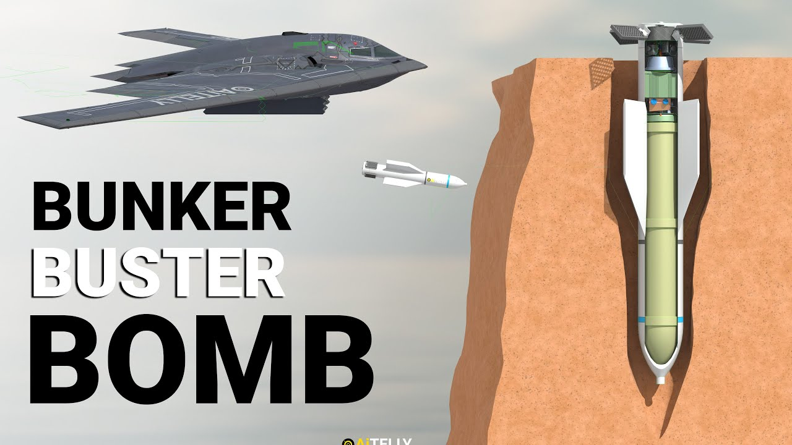

【地堡炸弹是如何工作的？】
Summary: This video explains the workings of bunker buster bombs, focusing on the GBU-57 (Massive Ordnance Penetrator), its design, guidance systems, penetration capabilities, and comparisons with other bombs like the GBU-28 and BLU-109. It also covers deployment, targeting, and the differences between the MOP and MOAB.
摘要： 本视频详细解析了地堡炸弹的工作原理，重点介绍了GBU-57（巨型钻地弹）的设计、制导系统、穿透能力，并与GBU-28和BLU-109等其他炸弹进行对比。同时涵盖了炸弹的投放、目标锁定过程，以及MOP与MOAB之间的区别。

⏱️ Estimated Reading Time: 12 min
📚 六级生词 📚 雅思生词 📚 托福生词 📚 专八生词 📚 SAT生词 📚 考研生词 📚 GRE生词 📚 高考生词
There are different bunker Buster bombs of different caliber but what sets it apart from the rest is this GBU 57 which is typically delivered by the B2 Spirit stealth bomber due to the bomb's large size and weight the aircraft can carry only two of these weapons in its bomb bay compartments.
地堡炸弹有多种不同口径的型号，但GBU-57因其特殊性脱颖而出，通常由B-2“幽灵”隐形轰炸机投放。由于炸弹体积和重量过大，该飞机弹舱仅能携带两枚。
While it lacks thrusters the weapon is equipped with four active lattice fins and a Precision guidance system that enables it to Glide accurately to its Target using military grade GPS.
尽管没有推进器，该武器配备了四片主动格栅尾翼和精密制导系统，借助军用级GPS实现精准滑翔命中目标。
Constructed from a specially designed high performance steel alloy using its weight when falling under Gravity to penetrate or dig itself up to 200 ft of underground soil or concrete.
其外壳采用特殊高性能合金钢制成，依靠重力下落时的重量可穿透或钻入地下200英尺的土壤或混凝土。
We'll also look into the difference between the massive ordinance penetrator and the mother of all bombs with step-by-step process of how they work all in the video ahead.
视频还将逐步解析巨型钻地弹（MOP）与“炸弹之母”（MOAB）的区别及其工作原理。
To give you an idea of the varying levels of penetration capability among different bunker Buster bombs let's compare a few examples.
为展示不同地堡炸弹的穿透能力差异，我们对比几个例子。
First we have the Blu 109 also pronounced blue and is a 2,000 lb or bomb developed in the 1970s this weapon is capable of penetrating approximately 1.8 m or about 5 ft of reinforced concrete.
首先是BLU-109（发音同“Blue”），1970年代研发的2000磅炸弹，可穿透约1.8米（5英尺）的加固混凝土。
Next we move on to the GBU 28 which is equipped with a laser guided system at its front this bong can penetrate to a depth of nearly 6 M equivalent to roughly 20 ft which is as tall as a 2story building.
接下来是GBU-28，前端配备激光制导系统，可钻入近6米（约20英尺，相当于两层楼高）的深度。
However neither of these compares the massive capabilities of the GBU 57 also known as the massive ordinance penetrator it can penetrate over 60 M into the ground around 200 ft to put that into perspective this depth is comparable to the height of a 20-story building.
但这些都无法与GBU-57（巨型钻地弹）相比，它能钻入地下60多米（约200英尺），相当于20层楼的高度。
Depending on the four Heights these examples demonstrate the significant advancements and differences in penetration levels among these specialized weapons.
通过四种深度对比，可见这些专用武器在穿透能力上的显著差异与技术演进。
Let's put an average human here against this weapon which is 20.5 ft long giving it a streamlined aerodynamic shape that is crucial for for stability and precision.
以平均身高的人类为参照，该武器长20.5英尺，流线型空气动力学设计对稳定性和精度至关重要。
With a diameter of 31.5 in and weighing an incredible 30,000 lb translating to approximately 14,000 kg it utilizes its massive weight to generate the kinetic energy required for deep penetration.
直径31.5英寸，重达惊人的3万磅（约1.4万公斤），利用巨大重量产生深层穿透所需的动能。
This heavy compact design enables it to break through over 200 ft of reinforced concrete making it one of the most effective bunker busting Munitions in the world.
这种重型紧凑设计使其能突破200英尺加固混凝土，成为全球最有效的地堡打击弹药之一。
Let's take a look at the parts of this weapon the most important part is the body casing made of hardened feroc Cobalt alloy to withstand impact.
观察其结构：最关键的是由硬化钴铁合金制成的外壳，可承受冲击。
Interestingly the body comprises more than 80% of the bomb's total weight inside this cover you will find the following components at the front is the nose fuse well all of which are joined by a fuse conduit swich within this Rod is the explosive filled 5,000 lb more head which translates to approximately 2,267 kg.
值得注意的是，外壳占炸弹总重80%以上。内部组件包括：前端的引信室，由引信导管连接；导管内是5000磅（约2267公斤）的爆炸装药弹头。
This conduit then connects to a tail fuse which interestingly is the main Detonator and is crucial for Delayed Action.
导管连接至尾部引信——这是主起爆器，延迟起爆的关键。
Moving to the back nestled inside the tail we discover the intricacies of its guidance system here the inertial guidance kit collaborates seamlessly with a military-grade global positioning unit ensuring precise navigation towards its intended target.
尾部内置复杂的制导系统：惯性制导组件与军用级全球定位单元协同工作，确保精准导航。
Alongside these components one can find the adapter ring which facilitates the attachment of the Telemetry antenna crucial for transmitting data as well as the encryption key battery which safeguards sensitive information.
其他组件包括适配环（用于安装遥测天线传输数据）和加密钥匙电池（保护敏感信息）。
Venturing deeper into its structure we encounter the thermal batteries vital for powering the system and the composite fins strategically positioned to Aid in directing the missile towards its objective.
深入结构可见：为系统供电的热电池，以及辅助导弹导向目标的复合材料尾翼。
These fins meticulously controlled by internal gears maneuver with Precision responding to commands to adjust the trajectory accurately.
这些尾翼由内部齿轮精密控制，实时响应指令调整弹道。
Let's take a look at the smaller bunker Buster and how it works it has a laser sensor at the the front and just behind that are adjustable fins in the midsection there's a warhead that weighs approximately 650 lb containing Tritonal explosive this is a mixture of 80% TNT and 20% aluminum powder.
再看小型地堡炸弹：前端有激光传感器，其后是可调尾翼；中段是650磅战斗部，装填特里托纳尔炸药（80%TNT与20%铝粉混合物）。
Finally we have the retractable fins at the rear to give you a better sense of its size comparing it to a person can be helpful.
尾部为可收缩尾翼。以人类为参照更直观：
The casing has a length of approximately 19 ft long which translates to around 5 m this section is made of an artillery Barrel which is very strong and has a diameter of 14.5 in which translates to around 37 CM making it relatively narrow.
弹体长约19英尺（5米），采用高强度炮管钢材制成，直径14.5英寸（37厘米），截面较窄。
They intentionally made the smaller cross-sectional area this means the bomb displaces less material whether Earth or concrete as it penetrates layers of reinforced bunkers or building the smaller cross-section allows it to enter deep into buildings potentially avoiding steel and concrete.
小截面设计减少穿透时对泥土或混凝土的位移量，使其能深入建筑结构，规避钢筋水泥层。
Let's move back to the mop and its cost Factor the development cost of the GBU 57 is estimated to be between $400 and $500 million with its production price per unit around $3.5 million.
回到MOP的成本：GBU-57研发费用约4-5亿美元，单枚生产成本约350万美元。
Meanwhile the GBU 28 a 4,000lb bomb costs approximately $1,000 to $150,000 per unit while the per unit cost of the Blu 109 is approximately $25,000 to $84,000 for each jdam kit.
而4000磅的GBU-28单价约1-15万美元，BLU-109配JDAM套件单价约2.5-8.4万美元。
Let's take a look at how this works step one the bomb deployment platform as previously mentioned a B2 stealth bomber flies in a very high altitude when the aircraft reaches the designated location and the conditions are optimal it releases the weapon.
运作流程第一步：投放平台——B-2隐形轰炸机高空飞行至目标区域后释放炸弹。
The bomb is designed for precision and the deployment Height plays a crucial role in its trajectory and Effectiveness.
炸弹设计精密，投放高度对弹道和效果至关重要。
Then step two comes the targeting Precision the bomb is outfitted with Advanced guidance technology including GPS and inertial navigation systems which are military-grade satellites.
第二步：目标锁定——配备军用级GPS和惯性导航系统。
Then comes step three that is adjusting the trajectory the guidance information and data is then transmitted to the bomb's four lattice Motors fins located at the rear these fins can move and adjust in real time allowing the bomb to correct its course as it descends under the force of gravity.
第三步：弹道调整——制导数据传至尾部四片格栅尾翼，实时调整下落轨迹。
These adjustments are essential because the weapon does not have thrusters to change its trajectory and St it relies on the movement of these fins and a high altitude drop to control its flight path.
因无推进器，炸弹完全依赖尾翼运动和高空投放控制飞行路径。
This is why the bomb must be deployed from a very high altitude so it has enough time and distance to adjust its trajectory accurately.
故需从极高空投放，以确保足够调整时间和距离。
Here comes the most difficult part that is step four impact and penetration the bomb known as the massive ordinance penetrator weighs approximately 30,000 lb which is around 14,000 kg when it reaches its Target it strikes with a M Force designed to penetrate deep into hardened structures such as bunkers.
最关键的第四步：撞击与穿透——重约3万磅（1.4万公斤）的MOP以巨大动能钻入加固地堡。
The energy upon impact allows the bomb to bury itself over 200 ft into reinforced concrete ensuring it delivers its payload precisely where it is intended for maximum effect.
冲击能量使其钻入200英尺加固混凝土，确保精确引爆达到最大效果。
Finally step five involves the tricky part of arming the weapon it was installed with two sdb fuses double fuses are required as a backup.
第五步：引信激活——配备两套SDB引信作为双重保险。
The first is for G sensing and the second is the time delay fuse why the read is design was necessary it was to ensure that the bond could strike facilities buried beneath significant layers of hardened material.
第一套G力感应引信，第二套延时引信——确保炸弹能穿透多层硬化材料后起爆。
For this reason the fuses are placed at the rear of the bomb to prevent them from being damaged once the time delay or the G sensing fuse reaches its destination it can blow up creating a mini earthquake that can bury bunkers and 20 story buildings inside them.
引信置于尾部防损毁，到达目标后引爆产生微型地震，摧毁地堡或20层建筑。
Many people often confuse the massive ordinance penetrator m o with the mother of all bombs M OAB which stands for massive ordinance Air Blast.
许多人混淆MOP（巨型钻地弹）与MOAB（“炸弹之母”，即巨型空爆炸弹）。
The mother of all bombs weighs approximately 21,600 lb and is designed to detonate above the ground creating a massive shock wave and blast radius however unlike the mop it does not have penetration capabilities.
MOAB重约2.16万磅，在地面引爆产生巨大冲击波，但无穿透能力。
This op is capable of digging up to 200 ft underground before exploding while the massive ordinance penetrator can be deployed from bombers such is the B2 spirit aircraft but this is not the case with the mother of all bombs is so large that it must be delivered via a C130 aircraft using a pallet system.
MOP可钻地200英尺后爆炸，由B-2投放；而MOAB因体积过大需C-130运输机用托盘系统投放。
Once deployed the bomb is dragged by a parachute and falls under Gravity Guided by an inertial navigation system and military grade GPS.
MOAB由降落伞拖曳下落，依赖惯性导航和军用GPS制导。
On April 13 the US dropped one of its largest non-nuclear bombs on a tunnel complex in eastern Afghanistan when it detonated the blast sucked all the oxygen out of the caves.
4月13日，美军在阿富汗东部隧道群投下该巨型非核炸弹，爆炸抽空了洞穴内氧气。
We make original videos from scratch so please do subscribe and hit the notification Bell for more videos.
我们原创制作视频，请订阅并开启通知铃获取更多内容。